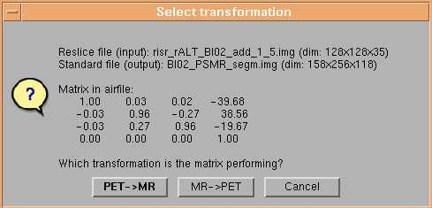

Registration:Load AIR-file
Run
Using this task it is possible to load a previous defined alignment file
(AIR file) that defines the transformation between the PET and MR image
load'en in the FileLoad task. When the AIR file have been selected a slection
image is opened like:

Using the buttons at the bottom of the page you have to select if the
loaded AIR file defines a transformation from PET to MR space or opposite.
Options
No options is available
Show
Using the show button, the two original loaded PET and MR images are shown.
You have to perform the reslice task before the actual loaded registration
file can be tested
Details
This gives information about which PET and MR file the transformation will
be applied to, and which AIR file is generated (in this case loaded)